This guide applies to the Chicago Region and is not complete for other regions.
Guide to Inocybe
The genus Inocybe is a group of typically little brown mushrooms (or LBMs) in the family Cortinariaceae. This large group is found throughout the world and is relatively common in the temperate regions of North America. Members of Inocybe are primarily terrestrial and are present in many habitats and forest types. All species in this genus are believed to form symbiotic relationships with plants, known as mycorrhizae.
To most mushroom collectors, this genus may not seem to have much to offer. No species are considered edible and macroscopic identification is often difficult. Members of Inocybe are typically dull-colored mushrooms, with a dry, conical or umbonate cap, that is covered with conspicuous minute hairs (hence the genus name, which means "fiber head"). The spore print color is brown, with variation in shade between species. Many species do have a distinctive odor, which can be helpful in differentiating between very similar looking species. Other important macroscopic characters for identification include the presence or absence of a bulbous or rimmed base on the stem, texture of the cap and stem surface, arrangement of the cap hairs, appearance of gill margins, and discoloration from bruising.
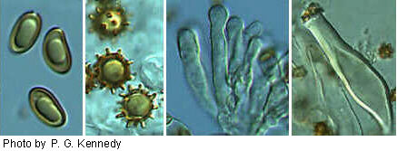Under the microscope, the genus Inocybe stands out as one of the more interesting of the gilled mushrooms. The spores range from smooth and bean shaped to spherical and very nodulose -- reminiscent of sea urchins. The cystidia of most members of Inocybe are also quite notable, with some being thin-walled and clavate and others being langeniform, metuloid (thick-walled), and encrusted with small crystals at the apex. The cystidia are often quite abundant and are present both on the gills as well as the stem of many species. These microscopic features and their size (length and width) will help in identifying different species.
This key to Inocybe covers those species found in the Chicago region that are under study at The Field Museum herbarium. Many of the names below are tentative (cf. and aff.). The key includes all of the common species encountered in this area, although there are other rare or uncertain species in the herbarium not included. Species were found across a range of habitats from shrub prairie to oak woodlands. Both macroscopic and microscopic features (spores and cystidia) are included here to facilitate identification. A table of microscopic features has also been included for comparison between species.
| Key Choice | bar = 10 µm | Go to | |
|---|---|---|---|
| 1a. Cap color white, cream, or lilac and cap surface not noticeably radially striate or rimose. | 2 | ||
| 1b. Cap color not as above (e.g. yellow, orange-brown, gray-brown, vinaceous) and/or cap noticeably radially striate or rimose. | 3 | ||
| 2a. Cap lilac, typically with umbo, surface smooth-silky, margin typically entire, 1-4 cm in diameter; gills white to gray-brown, margins often white fimbriate; stem whitish, silky. Spores smooth, ovoid, 8-11 x 4-6 µm; cystidia encrusted, metuloid, langeniform 35-70 x 14-20 µm. | 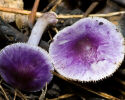 | 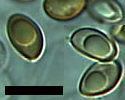 | Inocybe lilacina |
| 2b. Cap white, typically with umbo, surface smooth-silky, margin typically entire, fruitbodies not staining salmon in age, 1-4 cm in diameter; gills white to gray-brown, margins typically white fimbriate; stem white, silky. Spores smooth, ovoid, 8-11 x 4-6 µm; cystidia encrusted, metuloid (but relatively thin-walled), langeniform, 35-70 x 14-20 µm. | 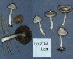 | 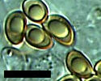 | Inocybe geophylla |
| 2c. Cap cream to light tan-brown, with white umbo, surface typically smooth or finely striate, margin typically entire; gills white to gray-brown, margins not white fimbriate; stem pale pinkish-cream to grayish. Spores nodulose, broadly ovoid, 6-8 x 4-6 µm; cystidia encrusted, metuloid, langeniform, 35-70 x 11-16 µm. |  |
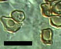 | Inocybe cf. albodisca |
| 3a. Cap conspicuously radially striate and/or rimose, with cap hairs typically splitting to reveal cap surface underneath, not scaly. | 4 | ||
| 3b. Cap not consipuously radially striate, surface may be finely striate, with cap hairs appressed, or surface has patchy hairs or scales. | 9 | ||
| 4a. Cap hairs always appressed, generally lighter in color; gills margins white fimbriate; stem without bulbous base or collar. | 5 | ||
| 4b. Cap hairs various shades of brown or vinaceous, typically not widely split apart, and sometimes erect; gills marginate or not. | 6 | ||
| 5a. Cap typically straw-colored to ochre, surface conspicuously radially striate to margin, with variable colored hairs ranging from light yellow to rusty brown, often somewhat browner in center, and margin rimose with age; gills straw colored to olivaceous brown, margins white fimbriate; stem equal without bulbous base. Odor spermatic. Spores smooth, bean-shaped to elliptical, 9-13 x 5-8 µm; cystidia thin-walled, clavate, 28-60 x 12-22 µm. | Inocybe rimosa | ||
| 5b. Almost identical characters to I. rimosa, but with an odor of green corn. | Inocybe cf. sororia | ||
| 5c. Cap cream to honey yellow, surface with radially striate hairs, not darker in center, otherwise similar in appearance to I. rimosa; gills honey yellow, margins finely white fimbriate. Spores nodulose, subglobose, 7 x 5 µm; cystidia encrusted (but with relatively few crystals), metuloid, clavate, 45-60 µm. | Inocybe aff. pseudoumbrina | ||
| 6a. Cap light yellow brown to rusty brown, with rusty brown radially erect or appressed, striate hairs (striate lines on cap tend to be more closely spaced than in I. rimosa), typically darker brown colored at center, sometimes with umbo, margin not rimose; gills whitish to grayish brown, margins not white fimbriate; stem with conspicuous collar at base. | 7 | ||
| 6b. Cap hairs dark brown or vinaceous. | 8 | ||
| 7a. Cap 2.5-6 cm in diameter. Spores very nodulose, ovoid, 9-12 x 7-8 µm; cheilo- and pleurocystidia encrusted, metuloid, 45-70 x 13-21 µm, caulocystidia encrusted, metuloid, langeniform, 60-85 µm; cystidia typically with long narrow necks. | Inocybe praetervisa | ||
| 7b. Fruitbodies typically smaller than I. praetervisa, cap 2-4.5 cm in diameter. Spores very nodulose, ovoid, 7-9.5 x 5-7 µm; cheilo- and pleurocystidia encrusted, metuloid, langeniform, 40-60 x 13-20 µm, caulocystidia encrusted, metuloid, langeniform, 30-65 x 12-20 µm. | Inocybe aff. mixtilis | ||
| 8a. Cap honey yellow to straw colored, but conspicously covered by dark purplish brown radially striate hairs (much darker than I. rimosa), darker at center, usually with papillate or rounded umbo, margin entire; gills cream brown, margins not white fimbriate; stem entirely pruinose. Spores very nodulose, ovoid to subcylindrical, 5-10 x 5-7 µm; cystidia encrusted, metuloid, langeniform, 40-60 x 12-22 µm. | Inocybe aff. striata | ||
| 8b. Fruitbodies larger in stature than I. aff. striata; cap 3-10 cm in diameter, straw colored, but typically vinaceous in color because of abundant vinaceous radially striate almost scaly hairs (i.e. tending to clump into larger patches); gills medium brown, margins white fimbriate. Spores smooth, bean shaped to oval, 9-13 x 5-7 µm; cystidia thin-walled, clavate, 30-48 x 10-15 µm. | 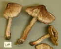 | 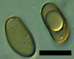 | Inocybe adaequata |
| 9a. Cap medium to dark brown and scaly; fruitbodies small in stature (cap diameter 1-3 cm). | 10 | ||
| 9b. Cap color otherwise (with yellow, orange, reddish, or grayish tints) or fruitbodies larger in stature; if cap diameter less than 3 cm then cap not both dark brown and scaly. | 11 | ||
| 10a. Cap medium to dark brown, umbo with patchy brown erect clumps of hairs (like raised shingles), becoming striate towards margin; stem medium brown (may have pinkish tint), often sinuous and texture more rubbery than fibrous, base sometimes with small whitish bulb; gills pale to medium brown. Spores spherical, with distinctly long spines (like a sea urchin), 8-13 x 7-10 µm; cystidia encrusted (but with few crystals), metuloid, langeniform, 30-55 x 10-13 µm. | 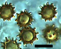 | Inocybe calospora | |
| 10b. Cap dark brown with brown scales, typically plane with entire margin; stem dark brown and darker at base; gills dark chocolate brown, not marginate. Spores smooth, almond shaped to cylindrical, 8-13 x 4-8 µm; cystidia encrusted, metuloid (but relatively thin-walled), broadly langeniform, 48-70 x 13-20 µm. | Inocybe aff. lacera | ||
| 11a. Cap diameter 2-7 cm, yellow-ochre to orange-brown, covered with minute ochre brown scales, sometimes darker at center, broadly convex to plane, occasionally with umbo, margin entire; stem with patchy ochre brown scales; gills pallid ochre brown to dark brown, margins typically white fimbriate. Spores smooth, ovoid, 8-12 x 4-6 µm; cystidia thin-walled, clavate, 37-55 x 8-13 µm. | 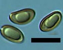 | Inocybe caesariata | |
| 11b. Cap color not as above; stem without patchy scales (but can be pruinose). | 12 | ||
| 12a. Cap hairs typically patchy or scaly, grayish to lighter brown. | 13 | ||
| 12b. Cap hairs not patchy, darker brown. | 14 | ||
| 13a. Cap diameter 3-5 cm, yellow brown to grayish tan, cap hairs scaly, close radially striate hairs present towards margin but can also appear patchy, center covered with light brown hairs that are sometimes patchy; gills grayish becoming medium brown; stem whitish. Spores smooth, ovoid to almond shaped, 8-11 x 5-6 µm; cystidia encrusted (but relatively few crystals), metuloid, langeniform, with very long and narrow necks, 48-75 x 13-19 µm. | 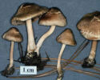 | 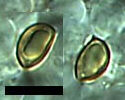 | Inocybe cf. flocculosa var. flocculosa |
| 13b. Cap diameter 1-3 cm, grayish to brown, typically with patches of grey appressed hairs, not umbonate; gills medium to dark brown, not marginate; stem pruinose. Spores nodulose, ovoid, 7-12 x 5-7 µm; cystidia encrusted, metuloid, broadly clavate, 40-55 µm in length x 15-23 µm. | 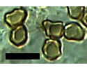 | Inocybe cf. cicatricata | |
| 14a. Cap diameter 2-5 cm, rusty to cocoa brown, finely radially striate, typically with dark brown umbo; gills variably pale to brown; stem pale white to cream colored, pruinose at least at apex. Spores smooth, ovoid, 8-11 x 4-6 µm; cystidia unencrusted to lightly encrusted, metuloid, langeniform but variable in shape, 35-70 x 16-20 µm. | 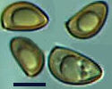 | Inocybe aff. fuscidula var. fuscidula | |
| 14b. Cap diameter 1.5-4 cm, dark grey brown to reddish brown, not radially striate, with rounded or indistinct umbo (sometimes a different color of brown); gills white to dark chocolate brown; stem with upper part reddish pruinose, cream colored at base. Spores smooth, ovoid, 6-12 x 5-6 µm; cystidia encrusted (but typically with few crystals), metuloid, langeniform, 40-80 x 12-22 µm. | Inocybe aff. nitidiuscula | ||